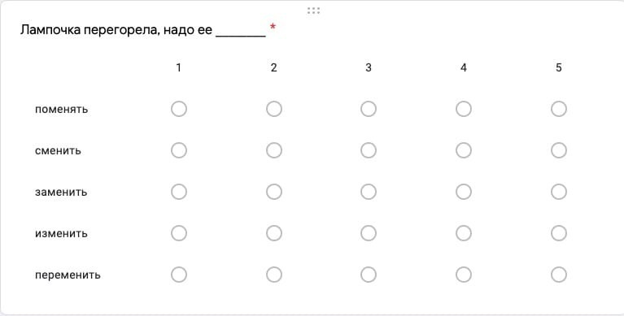

Опрос был создан для носителей русского языка по теме как распределяются по контекстам синонимы семантического поля менять по средствам google Forms. Опрашиваемый подтвердил согласие на использование ответов в анонимизированном виде, предоставил сведения о возрасте, гендерной пренадлежности, родном языке, каждый вопрос анкеты был обязательным, и каждый ответ давался небинарно. Вопросы выдавались респондентам в случайном порядке. Результаты анкетирования анализированись путем создания таблицы контингетности
Из полученных данных следует, что к кажному контексту анкетируемые выбрали в качестве наиболее правильных один или мксимум три верных на их взгляд ответа.
Исходя из этих данных можно предположить, что, несмотря на обширное количество синонимов семантического поля менять , далеко не каждый подходит к определенному контексту
Карандаш сломался, нужно его _______.
к данному контексту больше всего подходят такие синонимы семантического поля менять как поменять и заменить, остальные же поменяют и искозят смысл фразы
Это событие полностью _____ его.
к данному контексту наиболее применительны такие синонимы семантического поля менять как изменить и переменить, остальные же синонимы полностью изменят смысл фразы
Как выглядел опрос:
